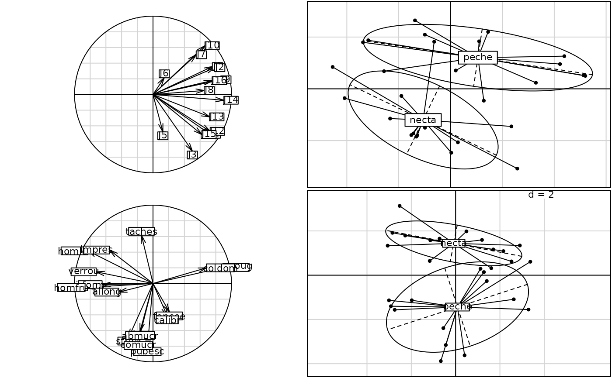

Pair of Tables
fruits.Rd28 batches of fruits -two types- are judged by two different ways.
They are classified in order of preference, without ex aequo, by 16 individuals.
15 quantitative variables described the batches of fruits.
Usage
data(fruits)Format
fruits is a list of 3 components:
- typ
is a vector returning the type of the 28 batches of fruits (peaches or nectarines).
- jug
is a data frame of 28 rows and 16 columns (judges).
- var
is a data frame of 28 rows and 16 measures (average of 2 judgements).
Details
fruits$var is a data frame of 15 variables:
taches: quantity of cork blemishes (0=absent - maximum 5)
stries: quantity of stria (1/none - maximum 4)
abmucr: abundance of mucron (1/absent - 4)
irform: shape irregularity (0/none - 3)
allong: length of the fruit (1/round fruit - 4)
suroug: percentage of the red surface (minimum 40% - maximum 90%)
homlot: homogeneity of the intra-batch coloring (1/strong - 4)
homfru: homogeneity of the intra-fruit coloring (1/strong - 4)
pubesc: pubescence (0/none - 4)
verrou: intensity of green in red area (1/none - 4)
foncee: intensity of dark area (0/pink - 4)
comucr: intensity of the mucron color (1=no contrast - 4/dark)
impres: kind of impression (1/watched - 4/pointillé)
coldom: intensity of the predominating color (0/clear - 4)
calibr: grade (1/<90g - 5/>200g)
Source
Kervella, J. (1991) Analyse de l'attrait d'un produit : exemple d'une comparaison de lots de pêches. Agro-Industrie et méthodes statistiques. Compte-rendu des secondes journées européennes. Nantes 13-14 juin 1991. Association pour la Statistique et ses Utilisations, Paris, 313–325.
Examples
data(fruits)
pcajug <- dudi.pca(fruits$jug, scann = FALSE)
pcavar <- dudi.pca(fruits$var, scann = FALSE)
if(adegraphicsLoaded()) {
g1 <- s.corcircle(pcajug$co, plot = FALSE)
g2 <- s.class(pcajug$li, fac = fruits$type, plot = FALSE)
g3 <- s.corcircle(pcavar$co, plot = FALSE)
g4 <- s.class(pcavar$li, fac = fruits$type, plot = FALSE)
G1 <- ADEgS(list(g1, g2, g3, g4), layout = c(2, 2))
G2 <- plot(coinertia(pcajug, pcavar, scan = FALSE))
} else {
par(mfrow = c(2,2))
s.corcircle(pcajug$co)
s.class(pcajug$li, fac = fruits$type)
s.corcircle(pcavar$co)
s.class(pcavar$li, fac = fruits$type)
par(mfrow = c(1,1))
plot(coinertia(pcajug, pcavar, scan = FALSE))
}

#> Error in s.corcircle(dfxy = coinertia(pcajug, pcavar, scan = FALSE)$aX, xax = 1, yax = 2, plot = FALSE, storeData = TRUE, pos = -3, psub = list(text = "Unconstrained axes (X)"), pbackground = list( box = FALSE), plabels = list(cex = 1.25)): non convenient selection for dfxy (can not be converted to dataframe)